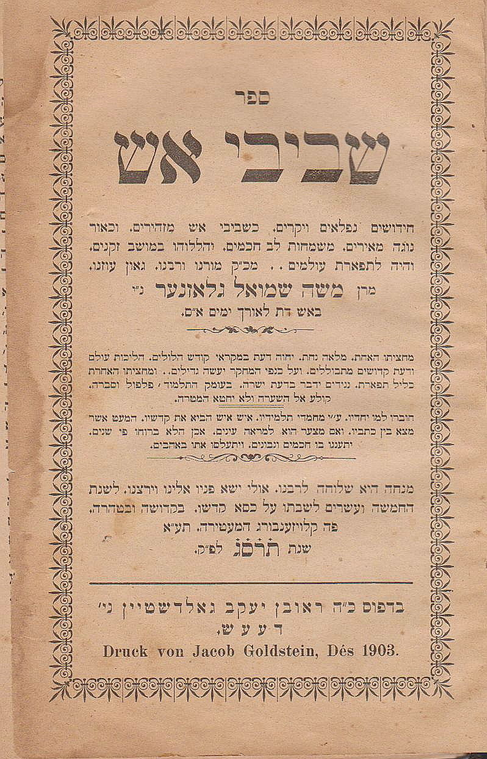

Hebrew text along with English translations by David Glasner
To view text move the mouse over the red letters and lists will appear
Continue moving the mouse down the lists to click on your choice or its translation
ראש דבר
על התורה
חומש בראשית
לסדר בראשית
Translation
לסדר נח
Translation
לסדר לך לך
Translation
לסדר וירא
Translation
לסדר חיי שרה
Translation
לסדר תולדות
Translation
לסדר ויצא
Translation
לסדר וישלח
Translation
לסדר וישב
Translation
לסדר מקץ
Translation
לסדר ויגש
Translation
לסדר ויחי
Translation
חומש שמות
לסדר שמות
Translation
לסדר וארא
Translation
לסדר בא
Translation
לסדר בשלח
Translation
לסדר יתרו
Translation
לסדר משפמים
Translation
לסדר תרומה
Translation
לסדר תצוה
Translation
לסדר כי תשא
Translation
לסדר ויקהל
Translation
לסדר פקודי
Translation
חומש ויקרא
לסדר ויקרא
Translation
לסדר צו
Translation
לסדר שמיני
Translation
לסדר תזריע
Translation
לסדר מצורע
Translation
לסדר אחרי מות
Translation
לסדר קדושים
Translation
לסדר אמור
Translation
לסדר בהר
Translation
לסדר בחוקותי
Translation
חומש במדבר
לסדר במדבר
Translation
לסדר נשא
Translation
לסדר בהעלתך
Translation
לסדר שלח
Translation
לסדר קרח
Translation
לסדר חקת
Translation
לסדר בלק
Translation
לסדר פנחס
Translation
לסדר מטות
Translation
לסדר מסעי
Translation
חומש דברים
לסדר דברים
Translation
לסדר ואתחנן
Translation
לסדר עקב
Translation
לסדר ראה
Translation
לסדר שופטים
Translation
לסדר כי תצא
Translation
לסדר כי תבוא
Translation
לסדר ניצבים
Translation
לסדר וילך
Translation
לסדר האזינו
Translation
לסדר וזאת הברכה
Translation
סמיכות סיום התורה לתחילתה
Translation
Appendix
על חגים וזמנים
ראש השנה
Translation
יום הכיפורים
Translation
לחג הסוכות
Translation
ימי החנוכה
Translation
לחג הפסח
Translation
לחג השבועות
Translation
Appendix
תוספת
יום העצמאות
Translation
חידושי הלכות
לקוטים